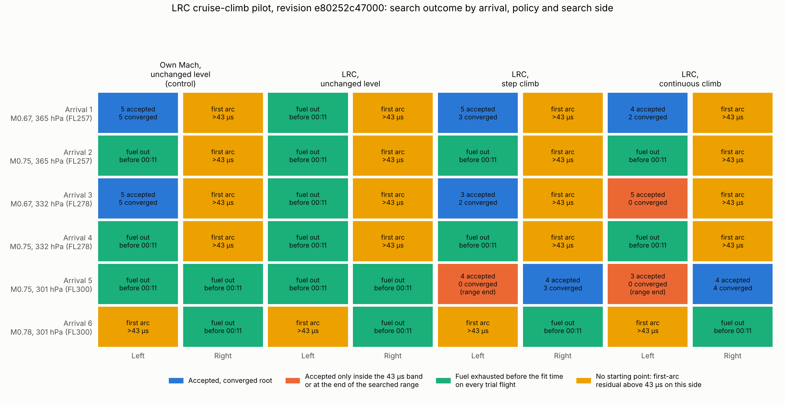

LRC CRUISE-CLIMB PILOT · FROZEN REVISION e80252c47000 · COMPLETED 22 NOVEMBER 2026
This pilot asks whether the aircraft could have followed the later satellite timing measurements if its speed and cruise level responded to its own falling weight, the way a long-range-cruise (LRC) schedule does, instead of holding a fixed Mach and level. The answer from the saved records: yes, the two climbing LRC schedules produce further flights that fit the three timing measurements from 20:41 to 00:11. None of them keeps engine fuel until the final transmissions at 00:19:29 and 00:19:37.
Configurations (6 starting states × 4 cruise schedules), each searched for a left and a right first turn
Search sides with an accepted flight; 7 with a converged solution
Retained flight records: 32 LRC and 10 fixed-Mach controls
Half-step numerical repeats that agree within their limits
The question and design · Search outcomes · Fuel and the final transmissions · Numerical checks · Initial-consistency certificates · What comes next · Downloads and provenance
Each flight starts at 19:41:03 UTC from an imposed arrival state: a Mach number and a pressure level. Pressure level is how an aircraft's altimeter measures height; the altitudes below convert it with the standard atmosphere.
| Arrival | Mach at 19:41 | Pressure level | Pressure altitude |
|---|---|---|---|
| 1 | 0.67 | 365.1 hPa | about 25,700 ft |
| 2 | 0.75 | 365.1 hPa | about 25,700 ft |
| 3 | 0.67 | 331.7 hPa | about 27,800 ft |
| 4 | 0.75 | 331.7 hPa | about 27,800 ft |
| 5 | 0.75 | 300.9 hPa | about 30,000 ft |
| 6 | 0.78 | 300.9 hPa | about 30,000 ft |
Each arrival was flown under four cruise schedules:
Under an LRC schedule the commanded speed and level depend on the aircraft's own weight and the air it is flying through, which in turn depend on the commands. The schedule is therefore found by iteration until the commands the flight implies match the commands flown.
For each configuration the search adjusts a first turn and, where needed, a second turn, on each side (left and right first turns). A flight is accepted when the model supports it throughout and its satellite timing residual — measured burst timing offset minus the model's prediction — is within ±43 µs at all three fitted handshakes, 20:41:05, 21:41:27 and 00:11:00. This is the campaign's established tolerance. The 22:41 handshake is not fitted and plays no part in selection.

| Outcome | Sides | Meaning |
|---|---|---|
| Accepted flight found | 10 | 7 sides have a converged solution; 1 (arrival 3, continuous climb) has flights inside the 43 µs band without one; 2 (arrival 5, left) have accepted flights only at the boundary of the first-turn range. |
| Fuel exhausted before 00:11 | 18 | Every trial flight ran out of engine fuel before the 00:11:00 handshake. |
| No starting point | 20 | No first-turn sample on this side came within 43 µs at 20:41; the smallest residuals were 62–385 µs. |
| Limited by model support, schedule undefined, or no usable history | 0 | No flight was excluded by buffet, thrust, Mach-support, bank or crab limits. |
The pattern. Accepted flights occur only for arrivals 1, 3 and 5. The faster arrivals at each level (2, 4 and 6) have none under any schedule. LRC at an unchanged level has no accepted flight for any arrival. The two climbing LRC schedules add accepted flights for arrivals 1, 3 and 5, and arrival 5 is the clearest addition: its fixed-Mach control found none. Under the climbing schedules the flights still have fuel at 00:11:00; at an unchanged LRC level they do not. Lower fuel flow higher up is the likely physical reason, but this pilot did not isolate it.
| Arrival | Schedule | Side | Records | Converged | Largest of the three residuals, µs | Fuel at 00:11 kg | Engine fuel exhausted, UTC | Note |
|---|---|---|---|---|---|---|---|---|
| Arrival 1 | Own Mach, unchanged level (control) | Left | 5 | 5 | 0.05 | 208 | 00:13:09.4 | |
| Arrival 1 | LRC, step climb | Left | 5 | 3 | 0.01–16.26 | 202 | 00:13:13.2–13:13.3 | |
| Arrival 1 | LRC, continuous climb | Left | 4 | 2 | 0.08–4.92 | 248 | 00:13:43.2 | |
| Arrival 3 | Own Mach, unchanged level (control) | Left | 5 | 5 | 0.05 | 1,616 | 00:29:16.3 | |
| Arrival 3 | LRC, step climb | Left | 3 | 2 | 0.34–7.96 | 543 | 00:17:05.1 | |
| Arrival 3 | LRC, continuous climb | Left | 5 | 0 | 9.60–16.38 | 581 | 00:17:28.1 | in band, no converged root |
| Arrival 5 | LRC, step climb | Left | 4 | 0 | 28.68–40.53 | 194 | 00:13:07.2 | range boundary (first turn 0°) |
| Arrival 5 | LRC, step climb | Right | 4 | 3 | 0.01–8.52 | 195 | 00:13:07.1–13:07.3 | |
| Arrival 5 | LRC, continuous climb | Left | 3 | 0 | 28.47 | 226 | 00:13:28.1 | range boundary (first turn 0°) |
| Arrival 5 | LRC, continuous climb | Right | 4 | 4 | 0.07 | 226 | 00:13:28.1 |
Records are returned flight records, not independent routes: several solver starts can return the same route, and two arrival-3 continuous-climb records are the same route. At arrival 5 the left-side records sit at the shared boundary of the first-turn range (a first turn of 0°), while converged right-side solutions lie near +0.55°; the saved samples do not show whether the two connect. Source: all 48 sides (CSV), all 45 returned records (CSV).
Every retained LRC flight also passed the separate command-consistency check: the commands implied by its own weight and atmosphere history match the commands flown. All 18 LRC iterations converged in 2–4 passes without damping. Arrival 3 with step climbs needed a second round; the three superseded first-round records stay in the CSV, marked as not final.
Every accepted flight ends in a fuel event: the fuel available to the engines reaches the model's APU reserve of 6.80 kg. For the climbing LRC flights this happens between 00:13:07.14 and 00:17:28.07 UTC, near 36–37° S, 89–90° E, at about 12 km geometric height. The fixed-Mach control on arrival 1 runs out at 00:13:09; the control on arrival 3 runs out at 00:29:16.
The model's LRC objective is distance per unit of fuel, not maximum time aloft, so an LRC flight need not stay up longer than a slower fixed-Mach flight. Speed, height, the winds met and the fitted route all change together here; their separate effects on the fuel outcome were not isolated.
One flight on each accepted side was recomputed with half the integration step (7.5 s instead of 15 s). All 10 repeats agree within their limits: the largest change in the 00:11 position was 0.191 m (limit 1 m), and the largest change in the fuel-event time was 0.159 s (limit 1 s). Every repeat kept the same ending, and the LRC repeats remained command-consistent at the finer step.
These checks show the result does not depend on the step size for the selected flights. They are not an uncertainty bound on the physical model: fuel load, performance coefficients and weather carry their own uncertainty, which was not propagated here. Numerical repeats (CSV).
A separate check (G6) tries to certify that each LRC flight's opening commands are consistent with its starting state to within the platform's floating-point accuracy. It was recorded for every flight but, by an agreed decision on 21 November, it does not select, veto or rank any flight. For all 35 returned LRC records the outcome is not demonstrated, because the accuracy of the platform's maths library is not established for this run. The 10 fixed-Mach control records are recorded as control starts. The acceptance and command-consistency results above stand on their own and do not depend on G6.
The next stage compares all 42 retained flights, unchanged, with the 22:41 handshake. That handshake was not fitted and played no part in selection, but it is not a blind test: its value is public and earlier experiments used it. The assessment program is under review and no 22:41 prediction has been made for these flights. Its result will be published here when it exists.
Frozen revision e80252c47000; report commit be1c59f in the private source repository. The run used 20,432.6 s of computing time against a 90,000 s ceiling, with no interrupted attempts and no unresolved stops. Codex reviewed the saved records and the report; its corrections are applied, and its disposition is to keep the results and close the pilot. Kernel setup loaded the observation set, including the 22:41 measurement, as in every earlier run; no 22:41 calculation was made. The arrival states and schedules are imposed inputs: a configuration with no accepted flight means none was found within the searched turn ranges, not that every flight with that speed, level or schedule is impossible.